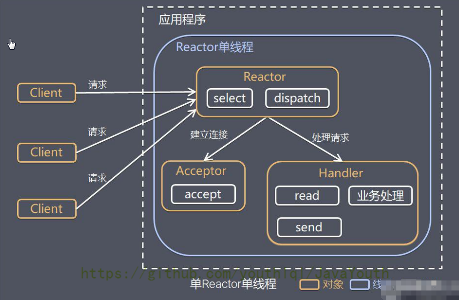
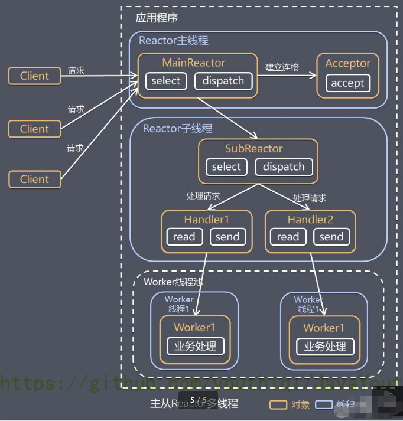
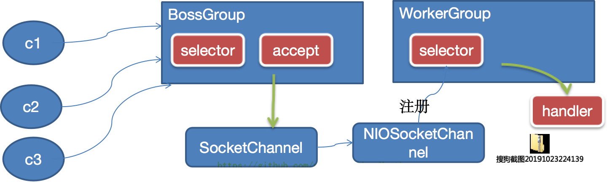
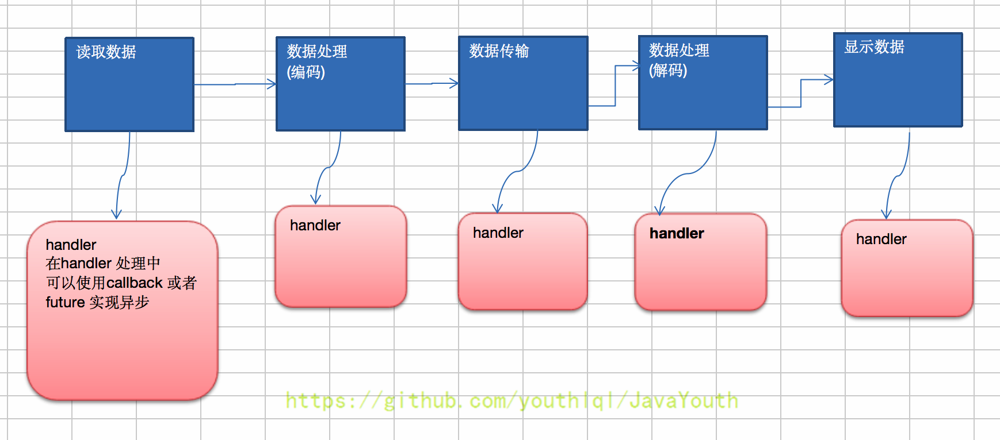

<!DOCTYPE html>


<html lang="zh-Hans">
  

    <head>
      <meta charset="utf-8" />
        
      <meta name="description" content="Technical output and problem solving record" />
      
      <meta
        name="viewport"
        content="width=device-width, initial-scale=1, maximum-scale=1"
      />
      <title>Java IO编程03-Netty高性能架构 |  Tunan`s Blog</title>
  <meta name="generator" content="hexo-theme-ayer">
      
      <link rel="shortcut icon" href="/favicon.ico" />
       
<link rel="stylesheet" href="/dist/main.css">

      <link
        rel="stylesheet"
        href="https://cdn.jsdelivr.net/gh/Shen-Yu/cdn/css/remixicon.min.css"
      />
      
<link rel="stylesheet" href="/css/custom.css">
 
      <script src="https://cdn.jsdelivr.net/npm/pace-js@1.0.2/pace.min.js"></script>
       
 

      <link
        rel="stylesheet"
        href="https://cdn.jsdelivr.net/npm/@sweetalert2/theme-bulma@5.0.1/bulma.min.css"
      />
      <script src="https://cdn.jsdelivr.net/npm/sweetalert2@11.0.19/dist/sweetalert2.min.js"></script>

      <!-- mermaid -->
      
      <style>
        .swal2-styled.swal2-confirm {
          font-size: 1.6rem;
        }
      </style>
    </head>
  </html>
</html>


<body>
  <div id="app">
    
      
    <main class="content on">
      <section class="outer">
  <article
  id="post-Netty-02"
  class="article article-type-post"
  itemscope
  itemprop="blogPost"
  data-scroll-reveal
>
  <div class="article-inner">
    
    <header class="article-header">
       
<h1 class="article-title sea-center" style="border-left:0" itemprop="name">
  Java IO编程03-Netty高性能架构
</h1>
 

      
    </header>
     
    <div class="article-meta">
      <a href="/2022/02/04/Netty-02/" class="article-date">
  <time datetime="2022-02-04T03:09:50.000Z" itemprop="datePublished">2022-02-04</time>
</a> 
  <div class="article-category">
    <a class="article-category-link" href="/categories/IO/">IO</a>
  </div>
  
<div class="word_count">
    <span class="post-time">
        <span class="post-meta-item-icon">
            <i class="ri-quill-pen-line"></i>
            <span class="post-meta-item-text"> Word count:</span>
            <span class="post-count">4.9k</span>
        </span>
    </span>

    <span class="post-time">
        &nbsp; | &nbsp;
        <span class="post-meta-item-icon">
            <i class="ri-book-open-line"></i>
            <span class="post-meta-item-text"> Reading time≈</span>
            <span class="post-count">19 min</span>
        </span>
    </span>
</div>
 
    </div>
      
    <div class="tocbot"></div>


  
    <div class="article-entry" itemprop="articleBody">
       
  <h1 id="原生NIO存在的问题"><a href="#原生NIO存在的问题" class="headerlink" title="原生NIO存在的问题"></a>原生NIO存在的问题</h1><ol>
<li>NIO的类库和API繁杂，使用麻烦：需要熟练掌握Selector、ServerSocketChannel、SocketChannel、ByteBuffer等.<span id="more"></span></li>
<li>需要具备其他的额外技能：要熟悉Java多线程编程，因为NIO编程涉及到Reactor模式，你必须对多线程和网络编程非常熟悉，才能编写出高质量的IO程序。</li>
<li>开发工作量和难度都非常大：例如客户端面临断连重连、网络闪断、半包读写、失败缓存、网络拥塞和异常流的处理等等。</li>
<li>JDK NIO的Bug:例如臭名昭著的Epoll Bug,它会导致Selector空轮询，最终导致CPU100%。直到JDK1.7版本该问题仍引旧存在，没有被根本解决。</li>
</ol>
<h1 id="Netty说明"><a href="#Netty说明" class="headerlink" title="Netty说明"></a>Netty说明</h1><ol>
<li>Netty是由BOSS提供的一个Java开源框架。Netty提供异步的、基于事件驱动的网络应用程序框架，用以快速开发高性能、高可靠性的网络O程序</li>
<li>Netty可以帮助你快速、简单的开发出一个网络应用，相当于简化和流程化了NIO的开发过程</li>
<li>Netty是目前最流行的NIO框架，Netty在互联网领域、大数据分布式计算领域、游戏行业、通信行业等获得了广泛的应用，知名的Elasticsearch、Dubbo框架内部都采用了Netty</li>
</ol>
<h1 id="Netty高性能架构设计"><a href="#Netty高性能架构设计" class="headerlink" title="Netty高性能架构设计"></a>Netty高性能架构设计</h1><h2 id="传统阻塞IO服务模型"><a href="#传统阻塞IO服务模型" class="headerlink" title="传统阻塞IO服务模型"></a>传统阻塞IO服务模型</h2><p></p>
<p>工作原理图：</p>
<ol>
<li>黄色的框表示对象，蓝色的框表示线程</li>
<li>白色的框表示方法（<code>API</code>）</li>
</ol>
<p>模型特点：</p>
<ol>
<li>采用阻塞 <code>IO</code> 模式获取输入的数据</li>
<li>每个连接都需要独立的线程完成数据的输入，业务处理，数据返回</li>
</ol>
<p>问题分析：</p>
<ol>
<li>当并发数很大，就会创建大量的线程，占用很大系统资源</li>
<li>连接创建后，如果当前线程暂时没有数据可读，该线程会阻塞在 Handler对象中的<code>read</code> 操作，导致上面的处理线程资源浪费</li>
</ol>
<h2 id="Reactor模式"><a href="#Reactor模式" class="headerlink" title="Reactor模式"></a>Reactor模式</h2><p>针对传统阻塞WO服务模型的2个缺点，解决方案：</p>
<ol>
<li>基于/0复用模型：多个连接共用一个阻塞对象，应用程序只需要在一个阻塞对象等待，无需阻塞等待所有连接。当某个连接有新的数据可以处理时，操作系统通知应用程序，线程从阻塞状态返回，开始进行业务处理</li>
<li>基于线程池复用线程资源：不必再为每个连接创建线程，将连接完成后的业务处理任务分配给线程进行处理，一个线程可以处理多个连接的业务。</li>
</ol>
<p></p>
<p>关于上图的解释 </p>
<ol>
<li><code>Reactor</code> 模式，通过一个或多个输入同时传递给服务处理器（ServiceHandler）的模式（基于事件驱动）</li>
<li>服务器端程序处理传入的多个请求,并将它们同步分派到相应的处理线程，因此 <code>Reactor</code> 模式也叫 <code>Dispatcher</code> 模式</li>
<li><code>Reactor</code> 模式使用 <code>IO</code> 复用监听事件，收到事件后，分发给某个线程（进程），这点就是网络服务器高并发处理关键</li>
</ol>
<h3 id="Reactor模式的核心组成"><a href="#Reactor模式的核心组成" class="headerlink" title="Reactor模式的核心组成"></a>Reactor模式的核心组成</h3><ol>
<li><code>Reactor（也就是那个ServiceHandler）</code>：<code>Reactor</code> 在一个单独的线程中运行，负责监听和分发事件，分发给适当的处理线程来对 <code>IO</code> 事件做出反应。它就像公司的电话接线员，它接听来自客户的电话并将线路转移到适当的联系人；</li>
<li><code>Handlers（处理线程EventHandler）</code>：处理线程执行 <code>I/O</code> 事件要完成的实际事件，类似于客户想要与之交谈的公司中的实际官员。<code>Reactor</code> 通过调度适当的处理线程来响应 <code>I/O</code> 事件，处理程序执行非阻塞操作。</li>
</ol>
<p>根据Reactor的数量和处理资源线程池的数量不同，有三种典型实现</p>
<h3 id="单Reactor单线程"><a href="#单Reactor单线程" class="headerlink" title="单Reactor单线程"></a>单Reactor单线程</h3><p>结合群聊程序</p>
<p></p>
<p><strong>方案说明</strong></p>
<ol>
<li><code>Select</code> 是前面 <code>I/O</code> 复用模型介绍的标准网络编程 <code>API</code>，可以实现应用程序通过一个阻塞对象监听多路连接请求</li>
<li><code>Reactor</code> 对象通过 <code>Select</code> 监控客户端请求事件，收到事件后通过 <code>Dispatch</code> 进行分发</li>
<li>如果是建立连接请求事件，则由 <code>Acceptor</code> 通过 <code>Accept</code> 处理连接请求，然后创建一个 <code>Handler</code> 对象处理连接完成后的后续业务处理</li>
<li>如果不是建立连接事件，则 <code>Reactor</code> 会分发调用连接对应的 <code>Handler</code> 来响应</li>
<li><code>Handler</code> 会完成 <code>Read</code> → 业务处理 → <code>Send</code> 的完整业务流程</li>
</ol>
<p>结合实例：服务器端用一个线程通过多路复用搞定所有的 <code>IO</code> 操作（包括连接，读、写等），编码简单，清晰明了，但是如果客户端连接数量较多，将无法支撑，前面的 <code>NIO</code> 案例就属于这种模型</p>
<p><strong>优缺点</strong></p>
<ol>
<li>优点：模型简单，没有多线程、进程通信、竞争的问题，全部都在一个线程中完成</li>
<li>缺点：性能问题，只有一个线程，无法完全发挥多核 <code>CPU</code> 的性能。<code>Handler</code>在处理某个连接上的业务时，整个进程无法处理其他连接事件，很容易导致性能瓶颈</li>
<li>缺点：可靠性问题，线程意外终止，或者进入死循环，会导致整个系统通信模块不可用，不能接收和处理外部消息，造成节点故障</li>
<li>使用场景：客户端的数量有限，业务处理非常快速，比如 <code>Redis</code> 在业务处理的时间复杂度 <code>O(1)</code> 的情况</li>
</ol>
<h3 id="单Reactor多线程"><a href="#单Reactor多线程" class="headerlink" title="单Reactor多线程"></a>单Reactor多线程</h3><p></p>
<p><strong>方案说明</strong></p>
<ol>
<li><code>Reactor</code> 对象通过 <code>Select</code> 监控客户端请求事件，收到事件后，通过 <code>Dispatch</code> 进行分发</li>
<li>如果是建立连接请求，则由 <code>Acceptor</code> 通过 <code>accept</code> 处理连接请求，然后创建一个 <code>Handler</code> 对象处理完成连接后的各种事件</li>
<li>如果不是连接请求，则由 <code>Reactor</code> 分发调用连接对应的 <code>handler</code> 来处理（也就是说连接已经建立，后续客户端再来请求，那基本就是数据请求了，直接调用之前为这个连接创建好的handler来处理）</li>
<li><code>handler</code> 只负责响应事件，不做具体的业务处理（这样不会使handler阻塞太久），通过 <code>read</code> 读取数据后，会分发给后面的 <code>worker</code> 线程池的某个线程处理业务。【业务处理是最费时的，所以将业务处理交给线程池去执行】</li>
<li><code>worker</code> 线程池会分配独立线程完成真正的业务，并将结果返回给 <code>handler</code></li>
<li><code>handler</code> 收到响应后，通过 <code>send</code> 将结果返回给 <code>client</code></li>
</ol>
<p><strong>优缺点</strong></p>
<ol>
<li>优点：可以充分的利用多核 <code>cpu</code> 的处理能力</li>
<li>缺点：多线程数据共享和访问比较复杂。<code>Reactor</code> 承担所有的事件的监听和响应，它是单线程运行，在高并发场景容易出现性能瓶颈。也就是说<code>Reactor</code>主线程承担了过多的事</li>
</ol>
<h3 id="主从Reactor多线程"><a href="#主从Reactor多线程" class="headerlink" title="主从Reactor多线程"></a>主从Reactor多线程</h3><p></p>
<p><strong>方案说明</strong></p>
<ol>
<li><code>Reactor</code> 主线程 <code>MainReactor</code> 对象通过 <code>select</code> 监听连接事件，收到事件后，通过 <code>Acceptor</code> 处理连接事件</li>
<li>当 <code>Acceptor</code> 处理连接事件后，<code>MainReactor</code> 将连接分配给 <code>SubReactor</code></li>
<li><code>subreactor</code> 将连接加入到连接队列进行监听，并创建 <code>handler</code> 进行各种事件处理</li>
<li>当有新事件发生时，<code>subreactor</code> 就会调用对应的 <code>handler</code> 处理</li>
<li><code>handler</code> 通过 <code>read</code> 读取数据，分发给后面的 <code>worker</code> 线程处理</li>
<li><code>worker</code> 线程池分配独立的 <code>worker</code> 线程进行业务处理，并返回结果</li>
<li><code>handler</code> 收到响应的结果后，再通过 <code>send</code> 将结果返回给 <code>client</code></li>
<li><code>Reactor</code> 主线程可以对应多个 <code>Reactor</code> 子线程，即 <code>MainRecator</code> 可以关联多个 <code>SubReactor</code></li>
</ol>
<p><strong>优缺点</strong></p>
<ol>
<li>优点：父线程与子线程的数据交互简单职责明确，父线程只需要接收新连接，子线程完成后续的业务处理。</li>
<li>优点：父线程与子线程的数据交互简单，<code>Reactor</code> 主线程只需要把新连接传给子线程，子线程无需返回数据。</li>
<li>缺点：编程复杂度较高</li>
</ol>
<p>结合实例：这种模型在许多项目中广泛使用，包括 <code>Nginx</code> 主从 <code>Reactor</code> 多进程模型，<code>Memcached</code> 主从多线程，<code>Netty</code> 主从多线程模型的支持</p>
<h3 id="Reactor模式小结"><a href="#Reactor模式小结" class="headerlink" title="Reactor模式小结"></a>Reactor模式小结</h3><p><strong>3 种模式用生活案例来理解</strong></p>
<ol>
<li>单 <code>Reactor</code> 单线程，前台接待员和服务员是同一个人，全程为顾客服</li>
<li>单 <code>Reactor</code> 多线程，<code>1</code> 个前台接待员，多个服务员，接待员只负责接待</li>
<li>主从 <code>Reactor</code> 多线程，多个前台接待员，多个服务生</li>
</ol>
<p><strong>Reactor 模式具有如下的优点</strong></p>
<ol>
<li>响应快，不必为单个同步时间所阻塞，虽然 <code>Reactor</code> 本身依然是同步的（比如你第一个SubReactor阻塞了，我可以调下一个 SubReactor为客户端服务）</li>
<li>可以最大程度的避免复杂的多线程及同步问题，并且避免了多线程/进程的切换开销</li>
<li>扩展性好，可以方便的通过增加 <code>Reactor</code> 实例个数来充分利用 <code>CPU</code> 资源</li>
<li>复用性好，<code>Reactor</code> 模型本身与具体事件处理逻辑无关，具有很高的复用性</li>
</ol>
<h2 id="Netty线程模式"><a href="#Netty线程模式" class="headerlink" title="Netty线程模式"></a>Netty线程模式</h2><p>基于主从Reactor多线程模型做了改进</p>
<p><strong>简单示意</strong></p>
<p></p>
<ol>
<li><code>BossGroup</code> 线程维护 <code>Selector</code>，只关注 <code>Accecpt</code></li>
<li>当接收到 <code>Accept</code> 事件，获取到对应的 <code>SocketChannel</code>，封装成 <code>NIOScoketChannel</code> 并注册到 <code>Worker</code> 线程（事件循环），并进行维护</li>
<li>当 <code>Worker</code> 线程监听到 <code>Selector</code> 中通道发生自己感兴趣的事件后，就进行处理（就由 <code>handler</code>），注意 <code>handler</code> 已经加入到通道</li>
</ol>
<p>==PS：<code>BossGroup</code>有点像主<code>Reactor</code> 可以有多个，<code>WorkerGroup</code>则像<code>SubReactor</code>一样可以有多个。==</p>
<p><strong>详细版</strong></p>
<p></p>
<p><strong>方案说明</strong></p>
<ol>
<li><code>Netty</code> 抽象出两组线程池 ，<code>BossGroup</code> 专门负责接收客户端的连接，<code>WorkerGroup</code> 专门负责网络的读写</li>
<li><code>BossGroup</code> 和 <code>WorkerGroup</code> 类型都是 <code>NioEventLoopGroup</code></li>
<li><code>NioEventLoopGroup</code> 相当于一个事件循环组，这个组中含有多个事件循环，每一个事件循环是 <code>NioEventLoop</code></li>
<li><code>NioEventLoop</code> 表示一个不断循环的执行处理任务的线程，每个 <code>NioEventLoop</code> 都有一个 <code>Selector</code>，用于监听绑定在其上的 <code>socket</code> 的网络通讯</li>
<li><code>NioEventLoopGroup</code> 可以有多个线程，即可以含有多个 <code>NioEventLoop</code></li>
<li>每个<code>BossGroup</code>下面的<code>NioEventLoop</code>循环执行的步骤有3步<ul>
<li>轮询 <code>accept</code> 事件</li>
<li>处理 <code>accept</code> 事件，与 <code>client</code> 建立连接，生成 <code>NioScocketChannel</code>，并将其注册到某个 <code>workerGroup</code> <code>NIOEventLoop</code> 上的 <code>Selector</code></li>
<li>继续处理任务队列的任务，即 <code>runAllTasks</code></li>
</ul>
</li>
<li>每个<code>workerGroup</code> <code>NIOEventLoop</code> 循环执行的步骤<ul>
<li>轮询 <code>read</code>，<code>write</code> 事件</li>
<li>处理 <code>I/O</code> 事件，即 <code>read</code>，<code>write</code> 事件，在对应 <code>NioScocketChannel</code> 处理</li>
<li>处理任务队列的任务，即 <code>runAllTasks</code></li>
</ul>
</li>
<li>每个 <code>Worker</code> <code>NIOEventLoop</code> 处理业务时，会使用 <code>pipeline</code>（管道），<code>pipeline</code> 中包含了 <code>channel（通道）</code>，即通过 <code>pipeline</code> 可以获取到对应通道，管道中维护了很多的处理器。（这个点目前只是简单的讲，后面重点说）</li>
</ol>
<h1 id="Netty-快速入门实例-TCP-服务"><a href="#Netty-快速入门实例-TCP-服务" class="headerlink" title="Netty 快速入门实例 - TCP 服务"></a>Netty 快速入门实例 - TCP 服务</h1><p>实例要求：使用 <code>IDEA</code> 创建 <code>Netty</code> 项目</p>
<ol>
<li><code>Netty</code> 服务器在 <code>6668</code> 端口监听，客户端能发送消息给服务器”hello,服务器~”</li>
<li>服务器可以回复消息给客户端”hello,客户端~”</li>
<li>目的：对 <code>Netty</code> 线程模型有一个初步认识，便于理解 <code>Netty</code> 模型理论</li>
<li><ol>
<li>编写服务端</li>
<li>编写客户端</li>
<li>对 <code>netty</code> 程序进行分析，看看 <code>netty</code> 模型特点</li>
<li>说明：创建 <code>Maven</code> 项目，并引入 <code>Netty</code> 包</li>
</ol>
</li>
</ol>
<h2 id="NettyServer"><a href="#NettyServer" class="headerlink" title="NettyServer"></a>NettyServer</h2><pre><code class="java">package com.atguigu.netty.simple;

import io.netty.bootstrap.ServerBootstrap;
import io.netty.channel.*;
import io.netty.channel.nio.NioEventLoopGroup;
import io.netty.channel.socket.SocketChannel;
import io.netty.channel.socket.nio.NioServerSocketChannel;
import io.netty.channel.socket.nio.NioSocketChannel;

public class NettyServer &#123;
    public static void main(String[] args) throws Exception &#123;


        //创建BossGroup 和 WorkerGroup
        //说明
        //1. 创建两个线程组 bossGroup 和 workerGroup
        //2. bossGroup 只是处理连接请求 , 真正的和客户端业务处理，会交给 workerGroup完成
        //3. 两个都是无限循环
        //4. bossGroup 和 workerGroup 含有的子线程(NioEventLoop)的个数
        //   默认实际 cpu核数 * 2
        EventLoopGroup bossGroup = new NioEventLoopGroup(1);
        EventLoopGroup workerGroup = new NioEventLoopGroup(); //8


        try &#123;
            //创建服务器端的启动对象，配置参数
            ServerBootstrap bootstrap = new ServerBootstrap();

            //使用链式编程来进行设置
            bootstrap.group(bossGroup, workerGroup) //设置两个线程组
                    .channel(NioServerSocketChannel.class) //使用NioSocketChannel 作为服务器的通道实现
                    .option(ChannelOption.SO_BACKLOG, 128) // 设置线程队列等待连接个数
                    .childOption(ChannelOption.SO_KEEPALIVE, true) //设置保持活动连接状态
//                    .handler(null) // 该 handler对应 bossGroup , childHandler 对应 workerGroup
                    .childHandler(new ChannelInitializer&lt;SocketChannel&gt;() &#123;//创建一个通道初始化对象(匿名对象)
                        //给pipeline 设置处理器
                        @Override
                        protected void initChannel(SocketChannel ch) throws Exception &#123;
                            System.out.println(&quot;客户socketchannel hashcode=&quot; + ch.hashCode()); //可以使用一个集合管理 SocketChannel， 再推送消息时，可以将业务加入到各个channel 对应的 NIOEventLoop 的 taskQueue 或者 scheduleTaskQueue
                            ch.pipeline().addLast(new NettyServerHandler());
                        &#125;
                    &#125;); // 给我们的workerGroup 的 EventLoop 对应的管道设置处理器

            System.out.println(&quot;.....服务器 is ready...&quot;);

            //绑定一个端口并且同步生成了一个 ChannelFuture 对象（也就是立马返回这样一个对象）
            //启动服务器(并绑定端口)
            ChannelFuture cf = bootstrap.bind(6668).sync();

            //给cf 注册监听器，监控我们关心的事件

            cf.addListener(new ChannelFutureListener() &#123;
                @Override
                public void operationComplete(ChannelFuture future) throws Exception &#123;
                    if (cf.isSuccess()) &#123;
                        System.out.println(&quot;监听端口 6668 成功&quot;);
                    &#125; else &#123;
                        System.out.println(&quot;监听端口 6668 失败&quot;);
                    &#125;
                &#125;
            &#125;);


            //对关闭通道事件  进行监听
            cf.channel().closeFuture().sync();
        &#125;finally &#123;
            bossGroup.shutdownGracefully();
            workerGroup.shutdownGracefully();
        &#125;

    &#125;

&#125;
</code></pre>
<h2 id="NettyServerHandler"><a href="#NettyServerHandler" class="headerlink" title="NettyServerHandler"></a>NettyServerHandler</h2><pre><code class="java">package com.atguigu.netty.simple;

import io.netty.buffer.ByteBuf;
import io.netty.buffer.Unpooled;
import io.netty.channel.Channel;
import io.netty.channel.ChannelHandlerContext;
import io.netty.channel.ChannelInboundHandlerAdapter;
import io.netty.channel.ChannelPipeline;
import io.netty.util.CharsetUtil;

import java.util.concurrent.TimeUnit;

/*
说明
1. 我们自定义一个Handler 需要继承netty 规定好的某个HandlerAdapter(规范)
2. 这时我们自定义一个Handler , 才能称为一个handler
 */
public class NettyServerHandler extends ChannelInboundHandlerAdapter &#123;

    //读取数据事件(这里我们可以读取客户端发送的消息)
    /*
    1. ChannelHandlerContext ctx:上下文对象, 含有 管道pipeline , 通道channel, 地址
    2. Object msg: 就是客户端发送的数据 默认Object
     */
    @Override
    public void channelRead(ChannelHandlerContext ctx, Object msg) throws Exception &#123;
        System.out.println(&quot;服务器读取线程 &quot; + Thread.currentThread().getName() + &quot; channle =&quot; + ctx.channel());
        System.out.println(&quot;server ctx =&quot; + ctx);
        System.out.println(&quot;看看channel 和 pipeline的关系&quot;);
        Channel channel = ctx.channel();
        ChannelPipeline pipeline = ctx.pipeline(); //本质是一个双向链表


        //将 msg 转成一个 ByteBuf
        //ByteBuf 是 Netty 提供的，不是 NIO 的 ByteBuffer.
        ByteBuf buf = (ByteBuf) msg;
        System.out.println(&quot;客户端发送消息是:&quot; + buf.toString(CharsetUtil.UTF_8));
        System.out.println(&quot;客户端地址:&quot; + channel.remoteAddress());
    &#125;

    //数据读取完毕
    @Override
    public void channelReadComplete(ChannelHandlerContext ctx) throws Exception &#123;

        //writeAndFlush 是 write + flush
        //将数据写入到缓存，并刷新
        //一般讲，我们对这个发送的数据进行编码
        ctx.writeAndFlush(Unpooled.copiedBuffer(&quot;hello, 客户端~(&gt;^ω^&lt;)喵1&quot;, CharsetUtil.UTF_8));
    &#125;

    //发生异常后, 一般是需要关闭通道

    @Override
    public void exceptionCaught(ChannelHandlerContext ctx, Throwable cause) throws Exception &#123;
        ctx.close();
    &#125;
&#125;
</code></pre>
<h2 id="NettyClient"><a href="#NettyClient" class="headerlink" title="NettyClient"></a>NettyClient</h2><pre><code class="java">package com.atguigu.netty.simple;

import io.netty.bootstrap.Bootstrap;
import io.netty.channel.ChannelFuture;
import io.netty.channel.ChannelInitializer;
import io.netty.channel.EventLoopGroup;
import io.netty.channel.nio.NioEventLoopGroup;
import io.netty.channel.socket.SocketChannel;
import io.netty.channel.socket.nio.NioSocketChannel;

public class NettyClient &#123;
    public static void main(String[] args) throws Exception &#123;

        //客户端需要一个事件循环组
        EventLoopGroup group = new NioEventLoopGroup();


        try &#123;
            //创建客户端启动对象
            //注意客户端使用的不是 ServerBootstrap 而是 Bootstrap
            Bootstrap bootstrap = new Bootstrap();

            //设置相关参数
            bootstrap.group(group) //设置线程组
                    .channel(NioSocketChannel.class) // 设置客户端通道的实现类(反射)
                    .handler(new ChannelInitializer&lt;SocketChannel&gt;() &#123;
                        @Override
                        protected void initChannel(SocketChannel ch) throws Exception &#123;
                            ch.pipeline().addLast(new NettyClientHandler()); //加入自己的处理器
                        &#125;
                    &#125;);

            System.out.println(&quot;客户端 ok..&quot;);

            //启动客户端去连接服务器端
            //关于 ChannelFuture 要分析，涉及到netty的异步模型
            ChannelFuture channelFuture = bootstrap.connect(&quot;127.0.0.1&quot;, 6668).sync();
            //对关闭通道事件  进行监听
            channelFuture.channel().closeFuture().sync();
        &#125;finally &#123;

            group.shutdownGracefully();

        &#125;
    &#125;
&#125;
</code></pre>
<h2 id="NettyClientHandler"><a href="#NettyClientHandler" class="headerlink" title="NettyClientHandler"></a>NettyClientHandler</h2><pre><code class="java">package com.atguigu.netty.simple;

import io.netty.buffer.ByteBuf;
import io.netty.buffer.Unpooled;
import io.netty.channel.ChannelHandlerContext;
import io.netty.channel.ChannelInboundHandlerAdapter;
import io.netty.util.CharsetUtil;

public class NettyClientHandler extends ChannelInboundHandlerAdapter &#123;

    //当通道就绪就会触发该方法
    @Override
    public void channelActive(ChannelHandlerContext ctx) throws Exception &#123;
        System.out.println(&quot;client &quot; + ctx);
        ctx.writeAndFlush(Unpooled.copiedBuffer(&quot;hello, server: (&gt;^ω^&lt;)喵&quot;, CharsetUtil.UTF_8));
    &#125;

    //当通道有读取事件时，会触发
    @Override
    public void channelRead(ChannelHandlerContext ctx, Object msg) throws Exception &#123;

        ByteBuf buf = (ByteBuf) msg;
        System.out.println(&quot;服务器回复的消息:&quot; + buf.toString(CharsetUtil.UTF_8));
        System.out.println(&quot;服务器的地址： &quot;+ ctx.channel().remoteAddress());
    &#125;

    @Override
    public void exceptionCaught(ChannelHandlerContext ctx, Throwable cause) throws Exception &#123;
        cause.printStackTrace();
        ctx.close();
    &#125;
&#125;
</code></pre>
<h1 id="TaskQueue使用场景"><a href="#TaskQueue使用场景" class="headerlink" title="TaskQueue使用场景"></a>TaskQueue使用场景</h1><h2 id="用户程序自定义普通任务"><a href="#用户程序自定义普通任务" class="headerlink" title="用户程序自定义普通任务"></a>用户程序自定义普通任务</h2><h2 id="用户自定义定时任务"><a href="#用户自定义定时任务" class="headerlink" title="用户自定义定时任务"></a>用户自定义定时任务</h2><h2 id="非当前Reactor线程调用Channel的各种方法"><a href="#非当前Reactor线程调用Channel的各种方法" class="headerlink" title="非当前Reactor线程调用Channel的各种方法"></a>非当前Reactor线程调用Channel的各种方法</h2><h1 id="异步模型"><a href="#异步模型" class="headerlink" title="异步模型"></a>异步模型</h1><h2 id="基本介绍"><a href="#基本介绍" class="headerlink" title="基本介绍"></a>基本介绍</h2><ol>
<li>异步和同步的概念相对。当一个异步过程调用发出后，调用者不能立刻得到结果。实际处理这个调用的组件，在处理完成后，通过状态、通知和回调来通知调用者</li>
<li>Netty的IO操作是异步的。包括Bind、Write、Connect等操作会先返回一个ChannelFuture</li>
<li>调用者并不能立刻得到结果，而是通过Future-Listener的机制，用户可以方便的主动获取IO操作结果</li>
<li>Netty的异步模型是建立在future和callback之上的。future的核心思想是：假设一个方法fun，计算过程可能非常耗时，等待fun方法返回先然不合适。那么可以在调用fun的时候，立马返回一个Future，后续通过Future去监控fun的处理过程。这也就是Future-Listener机制。</li>
</ol>
<h2 id="Future说明"><a href="#Future说明" class="headerlink" title="Future说明"></a>Future说明</h2><ol>
<li><p>表示异步的执行结果，可以通过它提供的方法来检测执行是否完成，比如检索计算等待</p>
</li>
<li><p>ChannelFuture是一个接口，<code>public interface ChannelFuture extends Future&lt;Void&gt;</code></p>
<p>可以添加监听器，当事件发生时，就会通知到监听器。</p>
</li>
</ol>
<h2 id="工作原理示意图"><a href="#工作原理示意图" class="headerlink" title="工作原理示意图"></a>工作原理示意图</h2><p></p>
<p></p>
<p><strong>说明</strong></p>
<ol>
<li>在使用 <code>Netty</code> 进行编程时，拦截操作和转换出入站数据只需要您提供 <code>callback</code> 或利用 <code>future</code> 即可。这使得链式操作简单、高效，并有利于编写可重用的、通用的代码。</li>
<li><code>Netty</code> 框架的目标就是让你的业务逻辑从网络基础应用编码中分离出来、解脱出来。</li>
</ol>
<h2 id="举例说明"><a href="#举例说明" class="headerlink" title="举例说明"></a>举例说明</h2><ol>
<li>当 <code>Future</code> 对象刚刚创建时，处于非完成状态，调用者可以通过返回的 <code>ChannelFuture</code> 来获取操作执行的状态，注册监听函数来执行完成后的操作。</li>
<li>常见有如下操作<ul>
<li>通过 <code>isDone</code> 方法来判断当前操作是否完成；</li>
<li>通过 <code>isSuccess</code> 方法来判断已完成的当前操作是否成功；</li>
<li>通过 <code>getCause</code> 方法来获取已完成的当前操作失败的原因；</li>
<li>通过 <code>isCancelled</code> 方法来判断已完成的当前操作是否被取消；</li>
<li>通过 <code>addListener</code> 方法来注册监听器，当操作已完成（<code>isDone</code>方法返回完成），将会通知指定的监听器；如果 <code>Future</code> 对象已完成，则通知指定的监听器</li>
</ul>
</li>
</ol>
<p>绑定端口是异步操作，当绑定操作处理完，将会调用相应的监听器处理逻辑</p>
<pre><code class="java">//绑定一个端口并且同步,生成了一个ChannelFuture对象
//启动服务器(并绑定端口)
ChannelFuture cf = bootstrap.bind(6668).sync();
//给cf注册监听器，监控我们关心的事件
cf.addListener(new ChannelFutureListener() &#123;
   @Override
   public void operationComplete (ChannelFuture future) throws Exception &#123;
      if (cf.isSuccess()) &#123;
         System.out.println(&quot;监听端口6668成功&quot;);
      &#125; else &#123;
         System.out.println(&quot;监听端口6668失败&quot;);
      &#125;
   &#125;
&#125;);
</code></pre>
 
      <!-- reward -->
      
    </div>
    

    <!-- copyright -->
    
    <div class="declare">
      <ul class="post-copyright">
        <li>
          <i class="ri-copyright-line"></i>
          <strong>Copyright： </strong>
          
          Copyright is owned by the author. For commercial reprints, please contact the author for authorization. For non-commercial reprints, please indicate the source.
          
        </li>
      </ul>
    </div>
    
    <footer class="article-footer">
       
<div class="share-btn">
      <span class="share-sns share-outer">
        <i class="ri-share-forward-line"></i>
        分享
      </span>
      <div class="share-wrap">
        <i class="arrow"></i>
        <div class="share-icons">
          
          <a class="weibo share-sns" href="javascript:;" data-type="weibo">
            <i class="ri-weibo-fill"></i>
          </a>
          <a class="weixin share-sns wxFab" href="javascript:;" data-type="weixin">
            <i class="ri-wechat-fill"></i>
          </a>
          <a class="qq share-sns" href="javascript:;" data-type="qq">
            <i class="ri-qq-fill"></i>
          </a>
          <a class="douban share-sns" href="javascript:;" data-type="douban">
            <i class="ri-douban-line"></i>
          </a>
          <!-- <a class="qzone share-sns" href="javascript:;" data-type="qzone">
            <i class="icon icon-qzone"></i>
          </a> -->
          
          <a class="facebook share-sns" href="javascript:;" data-type="facebook">
            <i class="ri-facebook-circle-fill"></i>
          </a>
          <a class="twitter share-sns" href="javascript:;" data-type="twitter">
            <i class="ri-twitter-fill"></i>
          </a>
          <a class="google share-sns" href="javascript:;" data-type="google">
            <i class="ri-google-fill"></i>
          </a>
        </div>
      </div>
</div>

<div class="wx-share-modal">
    <a class="modal-close" href="javascript:;"><i class="ri-close-circle-line"></i></a>
    <p>扫一扫，分享到微信</p>
    <div class="wx-qrcode">
      
    </div>
</div>

<div id="share-mask"></div>  
  <ul class="article-tag-list" itemprop="keywords"><li class="article-tag-list-item"><a class="article-tag-list-link" href="/tags/Netty/" rel="tag">Netty</a></li></ul>

    </footer>
  </div>

   
  <nav class="article-nav">
    
      <a href="/2022/02/17/Netty-03/" class="article-nav-link">
        <strong class="article-nav-caption">上一篇</strong>
        <div class="article-nav-title">
          
            Java IO编程04-Netty核心模块组件
          
        </div>
      </a>
    
    
      <a href="/2022/01/18/Netty-01/" class="article-nav-link">
        <strong class="article-nav-caption">下一篇</strong>
        <div class="article-nav-title">Java IO编程02-IO模型</div>
      </a>
    
  </nav>

   
<!-- valine评论 -->
<div id="vcomments-box">
  <div id="vcomments"></div>
</div>
<script src="//cdn1.lncld.net/static/js/3.0.4/av-min.js"></script>
<script src="https://cdn.jsdelivr.net/npm/valine@1.4.14/dist/Valine.min.js"></script>
<script>
  new Valine({
    el: "#vcomments",
    app_id: "",
    app_key: "",
    path: window.location.pathname,
    avatar: "monsterid",
    placeholder: "给我的文章加点评论吧~",
    recordIP: true,
  });
  const infoEle = document.querySelector("#vcomments .info");
  if (infoEle && infoEle.childNodes && infoEle.childNodes.length > 0) {
    infoEle.childNodes.forEach(function (item) {
      item.parentNode.removeChild(item);
    });
  }
</script>
<style>
  #vcomments-box {
    padding: 5px 30px;
  }

  @media screen and (max-width: 800px) {
    #vcomments-box {
      padding: 5px 0px;
    }
  }

  #vcomments-box #vcomments {
    background-color: #fff;
  }

  .v .vlist .vcard .vh {
    padding-right: 20px;
  }

  .v .vlist .vcard {
    padding-left: 10px;
  }
</style>

 
   
     
</article>

</section>
      <footer class="footer">
  <div class="outer">
    <ul>
      <li>
        Copyrights &copy;
        2018-2022
        <i class="ri-heart-fill heart_icon"></i> Tunan
      </li>
    </ul>
    <ul>
      <li>
        
      </li>
    </ul>
    <ul>
      <li>
        
        
        <span>
  <span><i class="ri-user-3-fill"></i>Visitors:<span id="busuanzi_value_site_uv"></span></span>
  <span class="division">|</span>
  <span><i class="ri-eye-fill"></i>Views:<span id="busuanzi_value_page_pv"></span></span>
</span>
        
      </li>
    </ul>
    <ul>
      
    </ul>
    <ul>
      
    </ul>
    <ul>
      <li>
        <!-- cnzz统计 -->
        
        <script type="text/javascript" src='https://s9.cnzz.com/z_stat.php?id=1278069914&amp;web_id=1278069914'></script>
        
      </li>
    </ul>
  </div>
</footer>    
    </main>
    <div class="float_btns">
      <div class="totop" id="totop">
  <i class="ri-arrow-up-line"></i>
</div>

<div class="todark" id="todark">
  <i class="ri-moon-line"></i>
</div>

    </div>
    <aside class="sidebar on">
      <button class="navbar-toggle"></button>
<nav class="navbar">
  
  <div class="logo">
    <a href="/"></a>
  </div>
  
  <ul class="nav nav-main">
    
    <li class="nav-item">
      <a class="nav-item-link" href="/">主页</a>
    </li>
    
    <li class="nav-item">
      <a class="nav-item-link" href="/archives">归档</a>
    </li>
    
    <li class="nav-item">
      <a class="nav-item-link" href="/categories">分类</a>
    </li>
    
    <li class="nav-item">
      <a class="nav-item-link" href="/tags">标签</a>
    </li>
    
    <li class="nav-item">
      <a class="nav-item-link" href="/tags/share">分享</a>
    </li>
    
    <li class="nav-item">
      <a class="nav-item-link" target="_blank" rel="noopener" href="https://blog.csdn.net/North_City_">CSDN</a>
    </li>
    
  </ul>
</nav>
<nav class="navbar navbar-bottom">
  <ul class="nav">
    <li class="nav-item">
      
      <a class="nav-item-link nav-item-search"  title="Search">
        <i class="ri-search-line"></i>
      </a>
      
      
      <a class="nav-item-link" target="_blank" href="/atom.xml" title="RSS Feed">
        <i class="ri-rss-line"></i>
      </a>
      
    </li>
  </ul>
</nav>
<div class="search-form-wrap">
  <div class="local-search local-search-plugin">
  <input type="search" id="local-search-input" class="local-search-input" placeholder="Search...">
  <div id="local-search-result" class="local-search-result"></div>
</div>
</div>
    </aside>
    <div id="mask"></div>

<!-- #reward -->
<div id="reward">
  <span class="close"><i class="ri-close-line"></i></span>
  <p class="reward-p"><i class="ri-cup-line"></i>请我喝杯咖啡吧~</p>
  <div class="reward-box">
    
    <div class="reward-item">
      
      <span class="reward-type">支付宝</span>
    </div>
    
    
    <div class="reward-item">
      
      <span class="reward-type">微信</span>
    </div>
    
  </div>
</div>
    
<script src="/js/jquery-3.6.0.min.js"></script>
 
<script src="/js/lazyload.min.js"></script>

<!-- Tocbot -->
 
<script src="/js/tocbot.min.js"></script>

<script>
  tocbot.init({
    tocSelector: ".tocbot",
    contentSelector: ".article-entry",
    headingSelector: "h1, h2, h3, h4, h5, h6",
    hasInnerContainers: true,
    scrollSmooth: true,
    scrollContainer: "main",
    positionFixedSelector: ".tocbot",
    positionFixedClass: "is-position-fixed",
    fixedSidebarOffset: "auto",
  });
</script>

<script src="https://cdn.jsdelivr.net/npm/jquery-modal@0.9.2/jquery.modal.min.js"></script>
<link
  rel="stylesheet"
  href="https://cdn.jsdelivr.net/npm/jquery-modal@0.9.2/jquery.modal.min.css"
/>
<script src="https://cdn.jsdelivr.net/npm/justifiedGallery@3.7.0/dist/js/jquery.justifiedGallery.min.js"></script>

<script src="/dist/main.js"></script>

<!-- ImageViewer -->
 <!-- Root element of PhotoSwipe. Must have class pswp. -->
<div class="pswp" tabindex="-1" role="dialog" aria-hidden="true">

    <!-- Background of PhotoSwipe. 
         It's a separate element as animating opacity is faster than rgba(). -->
    <div class="pswp__bg"></div>

    <!-- Slides wrapper with overflow:hidden. -->
    <div class="pswp__scroll-wrap">

        <!-- Container that holds slides. 
            PhotoSwipe keeps only 3 of them in the DOM to save memory.
            Don't modify these 3 pswp__item elements, data is added later on. -->
        <div class="pswp__container">
            <div class="pswp__item"></div>
            <div class="pswp__item"></div>
            <div class="pswp__item"></div>
        </div>

        <!-- Default (PhotoSwipeUI_Default) interface on top of sliding area. Can be changed. -->
        <div class="pswp__ui pswp__ui--hidden">

            <div class="pswp__top-bar">

                <!--  Controls are self-explanatory. Order can be changed. -->

                <div class="pswp__counter"></div>

                <button class="pswp__button pswp__button--close" title="Close (Esc)"></button>

                <button class="pswp__button pswp__button--share" style="display:none" title="Share"></button>

                <button class="pswp__button pswp__button--fs" title="Toggle fullscreen"></button>

                <button class="pswp__button pswp__button--zoom" title="Zoom in/out"></button>

                <!-- Preloader demo http://codepen.io/dimsemenov/pen/yyBWoR -->
                <!-- element will get class pswp__preloader--active when preloader is running -->
                <div class="pswp__preloader">
                    <div class="pswp__preloader__icn">
                        <div class="pswp__preloader__cut">
                            <div class="pswp__preloader__donut"></div>
                        </div>
                    </div>
                </div>
            </div>

            <div class="pswp__share-modal pswp__share-modal--hidden pswp__single-tap">
                <div class="pswp__share-tooltip"></div>
            </div>

            <button class="pswp__button pswp__button--arrow--left" title="Previous (arrow left)">
            </button>

            <button class="pswp__button pswp__button--arrow--right" title="Next (arrow right)">
            </button>

            <div class="pswp__caption">
                <div class="pswp__caption__center"></div>
            </div>

        </div>

    </div>

</div>

<link rel="stylesheet" href="https://cdn.jsdelivr.net/npm/photoswipe@4.1.3/dist/photoswipe.min.css">
<link rel="stylesheet" href="https://cdn.jsdelivr.net/npm/photoswipe@4.1.3/dist/default-skin/default-skin.min.css">
<script src="https://cdn.jsdelivr.net/npm/photoswipe@4.1.3/dist/photoswipe.min.js"></script>
<script src="https://cdn.jsdelivr.net/npm/photoswipe@4.1.3/dist/photoswipe-ui-default.min.js"></script>

<script>
    function viewer_init() {
        let pswpElement = document.querySelectorAll('.pswp')[0];
        let $imgArr = document.querySelectorAll(('.article-entry img:not(.reward-img)'))

        $imgArr.forEach(($em, i) => {
            $em.onclick = () => {
                // slider展开状态
                // todo: 这样不好，后面改成状态
                if (document.querySelector('.left-col.show')) return
                let items = []
                $imgArr.forEach(($em2, i2) => {
                    let img = $em2.getAttribute('data-idx', i2)
                    let src = $em2.getAttribute('data-target') || $em2.getAttribute('src')
                    let title = $em2.getAttribute('alt')
                    // 获得原图尺寸
                    const image = new Image()
                    image.src = src
                    items.push({
                        src: src,
                        w: image.width || $em2.width,
                        h: image.height || $em2.height,
                        title: title
                    })
                })
                var gallery = new PhotoSwipe(pswpElement, PhotoSwipeUI_Default, items, {
                    index: parseInt(i)
                });
                gallery.init()
            }
        })
    }
    viewer_init()
</script> 
<!-- MathJax -->

<!-- Katex -->

<!-- busuanzi  -->
 
<script src="/js/busuanzi-2.3.pure.min.js"></script>
 
<!-- ClickLove -->

<!-- ClickBoom1 -->

<!-- ClickBoom2 -->

<!-- CodeCopy -->
 
<link rel="stylesheet" href="/css/clipboard.css">
 <script src="https://cdn.jsdelivr.net/npm/clipboard@2/dist/clipboard.min.js"></script>
<script>
  function wait(callback, seconds) {
    var timelag = null;
    timelag = window.setTimeout(callback, seconds);
  }
  !function (e, t, a) {
    var initCopyCode = function(){
      var copyHtml = '';
      copyHtml += '<button class="btn-copy" data-clipboard-snippet="">';
      copyHtml += '<i class="ri-file-copy-2-line"></i><span>COPY</span>';
      copyHtml += '</button>';
      $(".highlight .code pre").before(copyHtml);
      $(".article pre code").before(copyHtml);
      var clipboard = new ClipboardJS('.btn-copy', {
        target: function(trigger) {
          return trigger.nextElementSibling;
        }
      });
      clipboard.on('success', function(e) {
        let $btn = $(e.trigger);
        $btn.addClass('copied');
        let $icon = $($btn.find('i'));
        $icon.removeClass('ri-file-copy-2-line');
        $icon.addClass('ri-checkbox-circle-line');
        let $span = $($btn.find('span'));
        $span[0].innerText = 'COPIED';
        
        wait(function () { // 等待两秒钟后恢复
          $icon.removeClass('ri-checkbox-circle-line');
          $icon.addClass('ri-file-copy-2-line');
          $span[0].innerText = 'COPY';
        }, 2000);
      });
      clipboard.on('error', function(e) {
        e.clearSelection();
        let $btn = $(e.trigger);
        $btn.addClass('copy-failed');
        let $icon = $($btn.find('i'));
        $icon.removeClass('ri-file-copy-2-line');
        $icon.addClass('ri-time-line');
        let $span = $($btn.find('span'));
        $span[0].innerText = 'COPY FAILED';
        
        wait(function () { // 等待两秒钟后恢复
          $icon.removeClass('ri-time-line');
          $icon.addClass('ri-file-copy-2-line');
          $span[0].innerText = 'COPY';
        }, 2000);
      });
    }
    initCopyCode();
  }(window, document);
</script>
 
<!-- CanvasBackground -->

<script>
  if (window.mermaid) {
    mermaid.initialize({ theme: "forest" });
  }
</script>


    
    

  </div>
</body>

</html>